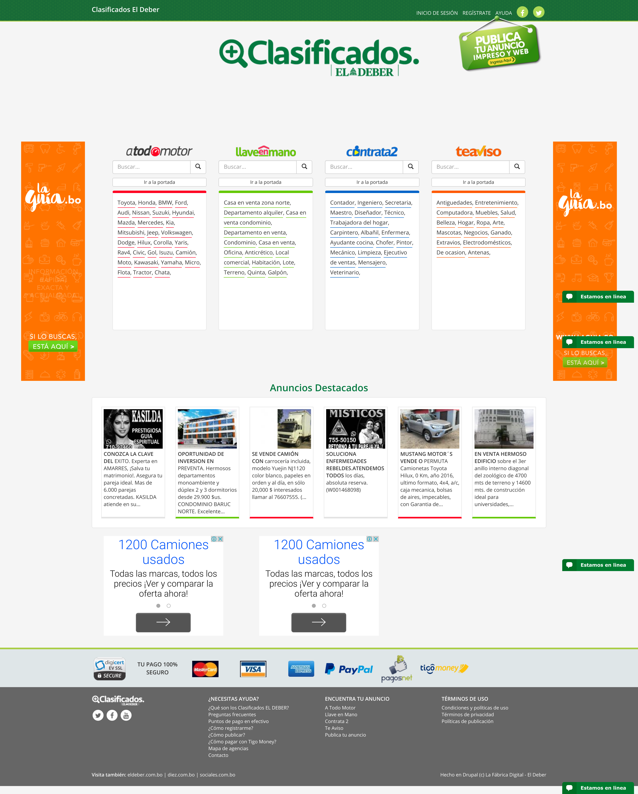
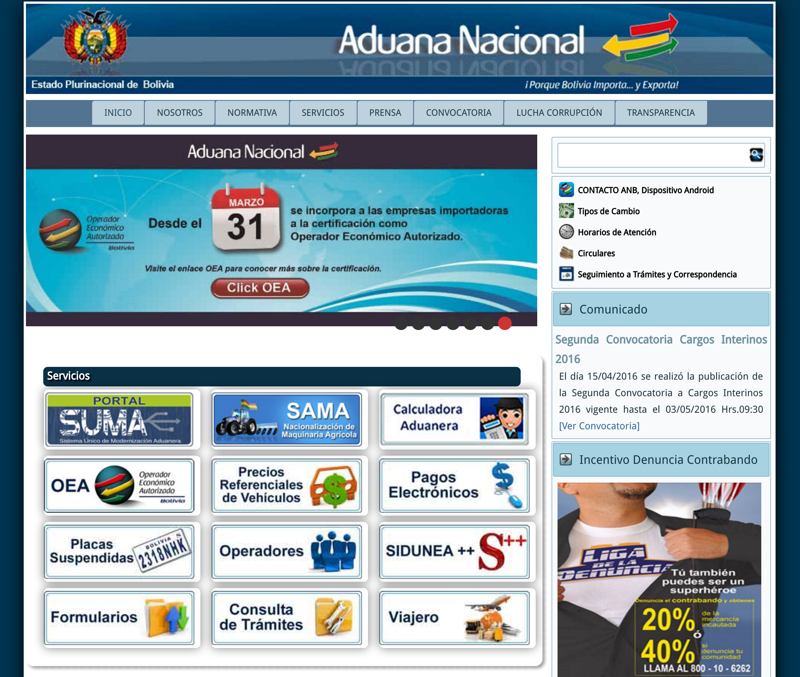
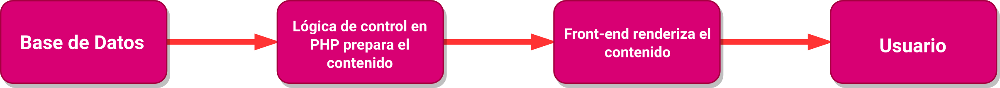

Web Services REST y Drupal
II CONGRESO NACIONAL DE INGENIERÍA ELÉCTRICA E INGENIERÍA ELECTRÓNICA 2019
Reveal.js Created by Hakim El Hattab / @hakimel
¿Qué es Drupal?
Drupal es abierto
Una plataforma de desarrollo web open source, gratuita, distribuída bajo la licencia GLP, para la creación, publicación y mantenimiento de contenido en línea y comunidades de usuarios.
Drupal es desarrollo web
Drupal es en su instalación más básica, una plataforma web corriendo encima de una base de datos, con herramientas de gestión de archivos y un alto nivel de seguridad
Drupal es social
Drupal es un sistema multiusuario que permite la definición de roles y permisos para las personas que utilizan el sitio
Drupal es comunidad
Drupal cuenta con una enorme comunidad de desarrolladores y usuarios en todo el mundo, que actualizan y mantienene miles de módulos de forma continua
¿Quién utiliza Drupal?
Drupal es utilizado en todo el mundo por empresas, instituciones y personas:
Drupal Showcases muestra una lista actualizada de sitios web en el mundo que utilizan Drupal
🡣
En Bolivia



¿Por qué Drupal?
- Potencia
- Modularidad
- Seguridad
- Portabilidad
- Rapidez
- Comunidad
- Buenas prácticas
¿Pero por qué Drupal?
- Sitios multilingües
- Views
- CCK
- Form API
- Mutisite
- Image styles
¿Qué puedo hacer con Drupal?
- Blogs
- Sitios corporativos
- Sitios institucionales
- Sitios educacionales
- Intranet
- E-commerce
- Framework de desarrollo
¿Qué necesito saber para usar Drupal?
Como usuario
Nociones de HTML
Como programador
- PHP
- Bases de datos
- HTML
- CSS
- jQuery
- Drupal API
La comunidad Drupal
- 30.000+ desarrolladores en todo el mundo
- Eventos y encuentros
- Comunidad en Bolivia Drupical
{ REST }
- Representational State Transfer
Principios
- Client-server
- Stateless
- Cacheable
- Uniform interface
- Layered system
- Code on demand
Recursos
Métodos
GET, POST, PUT, DELETE, PATCH
Drupal sin cabeza
Sitio web estático
CMS
Headless
Discovery
- Multilenguaje
- Alta disponibilidad
- Integración con servicios de terceros
- Apps